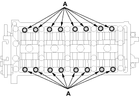
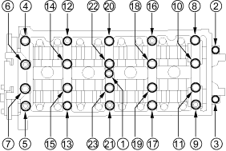
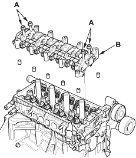

- Remove the cam chain (see page 6-13).
- Loosen the rocker arm adjusting screws (A).

- Remove the camshaft holder bolts. To prevent damaging the camshafts, unscrew the bolts two turns at a time, in a crisscross pattern.
CAMSHAFT HOLDER BOLTS LOOSENING SEQUENCE:


- Remove the cam chain guide B, camshaft holders and camshafts.
- Insert the bolts (A) into the rocker shaft holder, then remove the rocker arm assembly (B).
